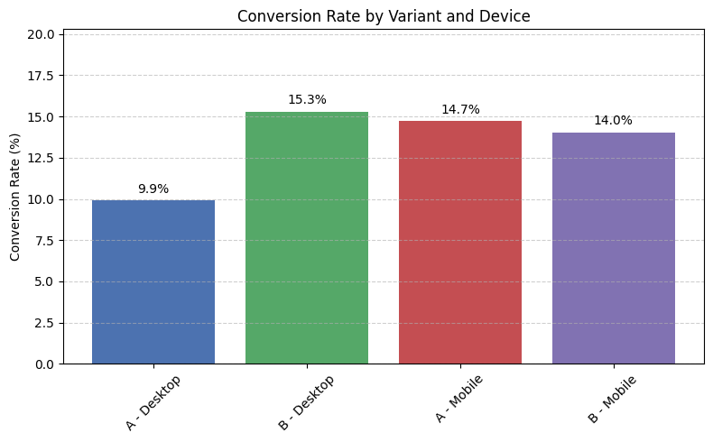
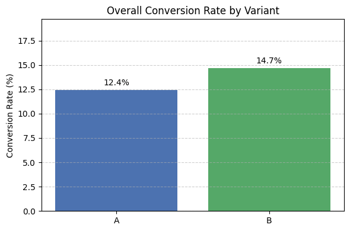

A/B Testing – Landing Page Optimization
Date: April 2025
🛠️ Tools Used
Python · Pandas · Matplotlib · Statsmodels
🎯 Project Scope & Objectives
- Evaluate if a new version of a product landing page increases conversion rates
- Simulate user interaction data with device and country segmentation
- Apply A/B testing using z-test for proportions
- Visualize and interpret results
🔍 Key Findings
- Overall difference in conversion rates (14.7% vs. 12.4%) was not statistically significant (p = 0.13)
- Segmented analysis revealed a statistically significant improvement on desktop (p = 0.0105)
- No significant difference on mobile (p = 0.76)
📎 Project Resources
🖼️ Dashboard Screenshots

